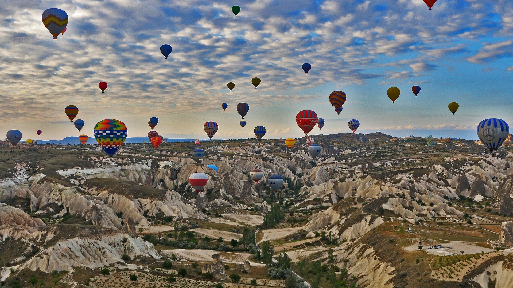

Capadócia, Turquia

A Capadócia, uma região semiárida na área central da Turquia, é conhecida pelas inconfundíveis "chaminés de fada", altas formações rochosas em formato de cone agrupadas no Vale dos Monges, em Göreme e em outros lugares. Outros locais importantes são as casas da Idade do Bronze esculpidas nas paredes do vale por trogloditas (habitantes das cavernas) e usadas posteriormente como refúgio pelos primeiros cristãos.
Ver mais